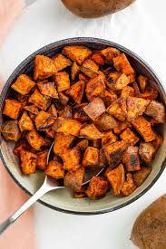

Roasted Sweet Potatoes

Description
These roasted sweet potatoes are a perfect side for breakfast, lunch, and dinner. When roasted properly,
they have a crunchy outside and a soft inside. The ingredient list for this recipe may be short, however,
the natural flavor of the sweet potatoes shine when refraining from adding an unecessary amount of extra spices
and herbs to the mix. Again, simplicity is key.
Ingredients
For four servings:
- 4 medium or large sweet potatoes
- 2 tbsp of olive oil
- Salt and pepper to taste
Steps
- Heat an oven between 425 °F and 475 °F.
- While the oven is heating, cut the sweet potatoes into 1" cubes
- Place the cubed sweet potatoes into a large mixing bowl, along with two tablespoons of olive oil and salt and pepper. Mix well.
- Once the oven has heated, transfer the sweet potatoes onto a baking sheet and place in the oven. Roast for approximately 40 minutes, shifting the cubes halfway.
- Once the sweet potatoes have browned nicely, remove them from the oven and let stand for ten minutes.
- Garnish with herbs and enjoy!